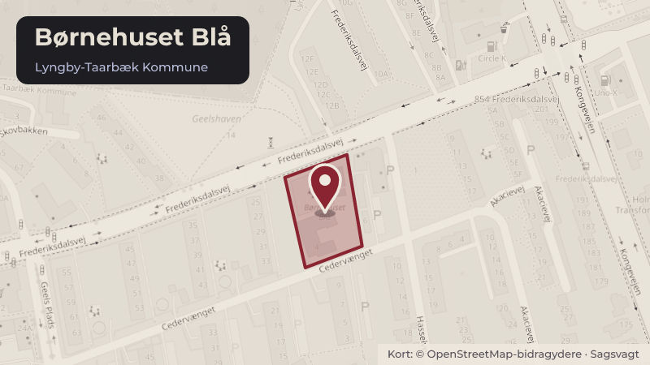

Besluttet 1. oktober, Økonomiudvalget, Lyngby-Taarbæk
Ny allonge til driftsoverenskomst - Idrætsbørnehuset Græshoppen
Skoler og børnBudget og økonomiKultur og fritid

Kort fortalt
- Hvem
- Økonomiudvalget, Lyngby-Taarbæk Kommune
- Hvornår
- Torsdag 1. oktober 2026
- Status
- Besluttet. Børne- og Skoleudvalget anbefaler. Økonomiudvalget anbefaler. Kommunalbestyrelsen beslutter. BESLUTNINGSFORLØB Beslutning fra Børne- og Skoleudvalget 2026-2029, den 23. september 2026, punkt 6: Ad 1-2) Anbefalet.
- Næste skridt
- Såfremt den nye allonge politisk godkendes, underskrives allongen af de involverede parter, og tilskuddet vil fremadrettet blive beregnet på baggrund af allongen.
Er noget forkert her? Skriv til os
Læs hele sagen Kommunens egen tekst
Indstilling
Forvaltningen foreslår, at
1. den nye tilskudsmodel fra budget 2027 godkendes,
2. den nye allonge godkendes.
Problemstilling
Lyngby-Taarbæk Kommune indgik den 8. maj 2002 en driftsaftale med puljeinstitutionen
Idrætsbørnehuset Græshoppen (daværende Børnehuset Blomsten) og Børneringen. I 2012
blev der indgået aftale om en allonge, der ændrede driftsaftalen, således at modelinstitutionen
Valmuen blev udskriftet med Børnehuset Blå, hvorefter:
§ 6 andet punktum i afsnittet vedr. Driftstilskud og betaling ændres til:
"Tilskuddets størrelse fastsættes en gang årligt svarende til budgettet for den kommunale
institution Børnehuset Blå, beliggende Cedervænget 4, 2830 Virum"
Børnehuset Blå er dog blevet sammenlagt med Naturbørnehaven Jordbærhaven, hvilket har
ændret så væsentligt på institutionens karakteristika, at institutionen ikke længere kan bruges
som udgangspunkt til fastsættelse af Græshoppens tilskud.
For at kunne beregne tilskuddet til Idrætsbørnehuset Græshoppen for 2027 ud fra en saglig og
økonomisk forsvarlig tilskudsmodel er der behov for at aftale en ny beregningsmodel. Dette
skal gøres inden næste års tilskud skal beregnes.
Idrætsbørnehuset Græshoppen er kommunens eneste puljeinstitution. De har deres egen
beregningsgrundlag, der adskiller sig fra andre institutioner i kommunen.
Den gældende driftsoverenskomst er bilagt.
Løsninger
Forvaltningen har på et møde den 26. juni 2026 fremlagt ny tilskudsmodel for lederen og
bestyrelsesformanden fra Idrætsbørnehuset Græshoppen samt direktøren fra Børneringen.
Formålet med modellen er at beregne et driftstilskud pr. barn, så Idrætsbørnehuset
Græshoppen økonomisk har samme økonomiske vilkår, som Lyngby-Taarbæk Kommunes
øvrige daginstitutioner.
Den nye tilskudsmodel kan overordnet opdeles i fire budgetelementer, der tilsammen giver
institutionens budgetgrundlag med udgangspunkt i den fastsatte normering:
Driftstilskud jf. Kommunens ressourcetildelingsmodel
Budget til ledelse
Grundtilskud/ejendomstilskud
Administrationsbidrag
Driftstilskuddet beregnes efter den samme ressourcetildelingsmodel, som anvendes for
kommunens øvrige kommunale og selvejende daginstitutioner. Modellen reguleres årligt med
pris- og lønfremskrivning samt eventuelle politisk besluttede ændringer.
Budgettet til ledelse er beregnet på baggrund af de gennemsnitlige forventede lønudgifter til
ledelse i 2026 for sammenlignelige kommunale institutioner. Budgettet reguleres herefter årligt
med samme lønfremskrivning som kommunes daginstitutionsledere.
Grundtilskud/ejendomstilskud tager delvist udgangspunkt i kommunens ejendomsmodel, og for
de elementer, der ikke indgår heri, er budgettet beregnet på baggrund af tildelingen til
kommunens selvejende institutioner. Budgettet reguleres herefter årligt med pris- og
lønfremskrivning samt eventuelle politisk besluttede ændringer.
Administrationsbidrag beregnes på samme måde som til kommunens selvejende institutioner,
hvilket er 2,1% af budgettet ekskl. udgifter til ejendomsvedligehold (indvendigt og udvendigt),
hvilket er uændret ift. den nuværende model.
De fire budgetelementer giver tilsammen en budgetgrundlag, hvorfra driftstilskuddet pr.
vuggestuebarn og børnehavebarn kan udledes på baggrund af den fastsatte normering.
På mødet var der enighed om den nye model.
Forvaltningen foreslår på baggrund af ovenstående, at modelinstitutionen Børnehuset Blå
udskiftes med den nye tilskudsmodel, hvorefter § 6 andet punktum i afsnittet vedr. Driftstilskud
og betaling ændres til:
"Tilskuddets størrelse fastsættes en gang årligt på baggrund af følgende tilskudsmodel.
Tilskudsmodel kan overordnet opdeles i fire budgetelementer, der tilsammen giver
institutionens budgetgrundlag med udgangspunkt i den fastsatte normering:
Driftstilskud jf. Kommunens ressourcetildelingsmodel
Budget til ledelse
Grundtilskud/ejendomstilskud
Administrationsbidrag
Driftstilskuddet beregnes efter den samme ressourcetildelingsmodel, som anvendes for
kommunens øvrige kommunale og selvejende daginstitutioner. Modellen reguleres årligt med
pris- og lønfremskrivning samt eventuelle politisk besluttede ændringer.
Budgettet til ledelse er beregnet på baggrund af de gennemsnitlige forventede lønudgifter til
ledelse i 2026 for sammenlignelige kommunale institutioner. Budgettet reguleres herefter årligt
med samme lønfremskrivning som kommunes daginstitutionsledere.
Grundtilskud/ejendomstilskud tager delvist udgangspunkt i kommunens ejendomsmodel, og for
de elementer, der ikke indgår heri, er budgettet beregnet på baggrund af tildelingen til
kommunens selvejende institutioner. Budgettet reguleres herefter årligt med pris- og
lønfremskrivning samt eventuelle politisk besluttede ændringer.
Administrationsbidrag beregnes på samme måde som til kommunens selvejende institutioner,
hvilket er 2,1% af budgettet ekskl. udgifter til ejendomsvedligehold (indvendigt og udvendigt),
hvilket er uændret ift. den nuværende model.
De fire budgetelementer giver tilsammen en budgetgrundlag, hvorfra driftstilskuddet pr.
vuggestuebarn og børnehavebarn kan udledes på baggrund af den fastsatte normering."
Den nye allonge er bilagt.
Strategisk ramme
Principper for økonomistyring for Lyngby-Taarbæk Kommune.
Økonomi
Sagen har ingen bevillingsmæssige konsekvenser.
Videre proces
Såfremt den nye allonge politisk godkendes, underskrives allongen af de involverede parter, og
tilskuddet vil fremadrettet blive beregnet på baggrund af allongen.
Beslutning
Børne- og Skoleudvalget anbefaler.
Økonomiudvalget anbefaler.
Kommunalbestyrelsen beslutter.
BESLUTNINGSFORLØB
Beslutning fra Børne- og Skoleudvalget 2026-2029, den 23. september 2026, punkt 6:
Ad 1-2) Anbefalet.
Kilde: Lyngby-Taarbæk Kommune, Økonomiudvalget, referat fra mødet torsdag 1. oktober 2026, punkt 13. Læs den originale sag hos kommunen.
Steder i sagen: Børnehuset Blå